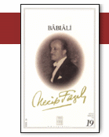

Necip Fazıl Kısakürek – Babıâli
www.kitapsevenler.com
Merhabalar
Buraya Yüklediğim e-kitaplar Aşağıda Adı Geçen Kanuna Đstinaden
Görme Özürlüler Đçin Hazırlanmıştır
Ekran Okuyucu, Braille 'n Speak Sayesinde Bu Kitapları Dinliyoruz
Amacım Yayın Evlerine Zarar Vermek Değildir
Bu e-kitaplar Normal Kitapların Yerini Tutmayacağından
Kitapları Beyenipte Engelli Olmayan Arkadaşlar Sadece Kitap Hakkında Fikir Sahibi Olduğunda
Aşağıda Adı Geçen Yayın Evi, Sahaflar, Kütüphane, ve Kitapçılardan Temin Edebilirler
Bu Kitaplarda Hiç Bir Maddi Çıkarım Yoktur Böyle Bir Şeyide Düşünmem
Bu e-kitaplar Kanunen Hiç Bir Şekilde Ticari Amaçlı Kullanılamaz
Bilgi Paylaştıkça Çoğalır
Yaşar Mutlu
Not: 5846 Sayılı Kanunun "altıncı Bölüm-Çeşitli Hükümler " bölümünde yeralan "EK MADDE 11.
- Ders kitapları dahil, alenileşmiş veya yayımlanmış yazılı ilim
ve edebiyat eserlerinin engelliler için üretilmiş bir nüshası yoksa hiçbir ticarî amaç güdülmeksizin bir engellinin kullanımı için kendisi veya üçüncü
bir kişi tek nüsha olarak ya da engellilere yönelik hizmet veren eğitim kurumu, vakıf veya dernek gibi kuruluşlar tarafından ihtiyaç kadar kaset, CD, braill
alfabesi ve benzeri 87matlarda çoğaltılması veya ödünç verilmesi bu Kanunda öngörülen izinler
alınmadan gerçekleştirilebilir."Bu nüshalar hiçbir şekilde
satılamaz, ticarete konu edilemez ve amacı dışında kullanılamaz ve kullandırılamaz. Ayrıca bu
nüshalar üzerinde hak sahipleri ile ilgili bilgilerin bulundurulması
ve çoğaltım amacının belirtilmesi zorunludur." maddesine istinaden web sitesinde deneme yayınına geçilmiştir.
T.C.Kültür ve Turizm Bakanlığı Bilgi Đşlem ve Otomasyon Dairesi Başkanlığı
Ankara
Bu kitaplar hazırlanırken verilen emeye harcanan zamana saydı duyarak
Lütfen Yukarıdaki ve Aşağıdaki Açıklamaları Silmeyin
Not bu kitaplar Görme engelliler için taranmış ve düzenlenmiştir.
Tarayan
Hasan Uslu
elhasenu@gmail.com
BABIÂLĐ
Necip Fazıl KISAKÜREK
BÜTÜN ESERLERĐ Cilt 19
ISBN 975-8180-57-6
HOCA ÜVEYS KÜTÜPHANESĐ
BABIÂLĐ / OTOBĐYOGRAFĐ
BĐR ĐZAH
8 Basım / Şubat 1999
b d yayınları 11 Baskı 1 ko Matbaası / 1st
b d yayınları Kurucusu Necip Fazıl Kısakürek
Yayın sorumlusu Sual Ak
b d yayınları Ankara Caddesi Vilayet Han Nu 10 Kat 3 Cağaloğlu Đstanbul
Her hakkı mahfuz ve b d yayınlarına aittir
"Bâbıâlı"yı okuyan bazı Müslümanlık taslayıcıların ondan gocunduklarını haber aldım Onlar, eserin, fikir ve sanat kıymetine dikkat ettikleri halde şahsıma ait günah dolu bir hayatın açığa vuruluşunda ayrıca günah bulunduğu kanaatinde imişler
Yazıklar olsun1
Eğer benim gayem Đlâhı rıza olmasaydı da bu çeşit insanları kurtarmak olsaydı onları kurtuluşa asla ehil saymaz, bir köşeye çekilir, "Allah’tan başka kelime etmez, yalnız nefsimin tezkıyesıyle uğraşır ve işte bu kabil marka Müslümanlarından el etek çekerdim
Bakın, ben ne yapmaktayım
30 küsür yıldır canımı dişime takarak ve küfür kilerinden ekmek yemektense Đslâm çılehanesmde
aç kalmayı tercih ederek, bu soydan Müslümanların kurtuluşa istihkakları noktasından değil de, bir gün bu dâvayı en geniş çapıyle temsil edecek yeni gençliğin hakkı bakımından ve o hak yolıyle
Đlâhı rıza için didinmekte, çırpınmakta, yırtınmaktayım Verdiğim iki cepheli muharebede de,
düşmanlarım, Islama dışından saldıranlarla onu içinden pörsütenler Yânı kâfirler ve kabalar
Şimdi esefle görüyorum ki, verimlerim arasında en mümtaz yerlerden birini almak istidadındaki bu eser, gençler ve hikmet sahibi gerçekler müstesna, işte, kurtuluş istihkakından mahrum ve ruhu küt bir sınıf tarafından anlaşılamamış, baştan aşağı sırlar ve incelikler manzumesi Đslâm her zaman
olduğu gibi bunlara yine kapalı kalmıştır.
Bilinmesini isterim ki, ben, şeriatin en küçük cüz'üne feza dolusu hazineleriyle bütün kâinatı feda etmekte tereddüdü olmayan, mutlak pazarlıksız ve muvazaasız biriyim; ve hakikatten seriate değil, şeriatten hakikate giden, yolcusu seyrek caddenin üstündeyim. Bence peşin, esas, asi olan yalınız şeriat...
Böyle olduğu için de, günahın açığa vurulmasındaki ayrı günahı eserimin başında kaydetmiş ve akıl almaz derecede cesur davranışımın hesabını vermiş bulunuyorum. Ama kim okur, kim dinler, kim
anlar?..
Ben bu eseri sadece Đslâmî gaye ve bu gayeye ilişik iki hedef üzerinde kaleme alıyorum.
Birincisi:
Benim hangi noktadan yola çıkıp işi hangi durakta bitirdiğimi ifade; ve en korkunç (anti tez)den gelerek (tez)i ispat etmek... (Metod)ların en kuşatıcısı...
Đkincisi:
Kurtuluş istihkakını kabul etmediğim malûm, kısır idraki sınıfını bir asırdan uzun bir zaman
ipliğiyle sımsıkı bağlayan, boğan ve sesini kesen ve "Babıâli" dedikleri fesad mihrakında yuvalanan küfür (klik)inin şahıs röntgen camını teşhir etmek...
Bu da taktiklerin en inandırıcısı...
Böylece Đslâm, Şeyh-i Ekber Hazretlerinin, "Müslüman küfür kaynağını tanımak borcundadır"
hikmetine imtisal yoliyle, usûllerin en güçlüsüyle düşürülmez bir hisar içine alınmış olur. Günah açığa vurmaktaki ayrı günah ise Hak için bir katlanma ve yüklenme zarureti olarak meydana çıkar.
Bu noktada Đslâm tasavvufunun "hakkı hak için iptal caizdir" hikmetinden de pay bulunduğunu gözden kaçırmamak lâzım; ve işi, asıl suç üstü suç olan günahla böbürlenici, yahut onun maksatsız hikâyesinden keyflenici, yahut da riyanın ta kendisi
olarak günah itirafında güya ihlâs vehmedici sefil ruh haletinden ayırmak gerek...
Ben, hastalık derecesinde günah kuşkusu taşıyan, ondan her dem ürperen, fakat gayenin izzet ve
muvaffakiyeti adına, Đslâmı savunmaktaki ihlâsımı en canhıraş celâdet ve fedakârlıkla göstermek
için icabında günaha katlanmaya da razı olan, Đslâm edebine ve bazı hallerde yine Đslâm için
uyamamakta hikmet arayan, bu bakımdan ve her bakımdan Đlâhî affa sığınan bir Müslü-manım; ve
bu incelik idrakinden yoksun insanlara karşı sadece mahzunum.
Veli çapında ve şeriati canından fazla sevmek mevkiinde |bir zat, bu satırlar kendisine okunurken şöyle demiştir:
- Hak ve fazilet gayesiyle günahını tespit etmekten büyük hak ve fazilet olamaz. Bunu anlamamak
ise denaet ve sefalet...
Ben bu eseri, gerçek Đslâm savunucularına karşı yöneltilecek küçük düşürme davranışları önünde
en tesirli müdafaanın ne demek olduğunu göstermek ve Đslâmın üstünlüğünü, ona zıt taklit
maymunlarının otopsisini yaparak belirtmek için yazarken, lâfta Müslümanlardan gördüğüm asık
suratı Allaha havale ve bu havaleden korkulması gerektiğini ilân ederim.
Đslâm uğrunda, Đslâmın şevket ve muzafferiyeti uğrunda, metodların her neviyle, şiirleriyle,
hikâyeleriy-le, piyesleriyle, fikrî ve tarihî etüdleriyle, konferanslarıyle meydana atılmış bu çilekeş
adam hakkında bu suçlama', onu derinden yaralamış, kalbini kırmış ve emeklerine küser hale
getirmiştir.
Bereket ki, bu çilekeş adam, fikir ve sanat zevkinden mahrumluk içinde şeriat inceliklerinden de yoksun böyleleri için çalışmıyor ve yine böylelerinin tükenmelerini ve yerlerini yeni gençliğe
terketmelerini Hak'tan diliyor.
1975
N. F. K.
BU ESER
• Bu eser bir insanın, kendisini kendisinden süzüp, ayırıp, çıkarıp, türlü dekorları, eşyası, etrafiyle bir arada dışarıdan
seyredişini çerçeveliyor.
• Kendi öz şahıs plânında da mümkün mertebe (objektif - âfâki) olmaya çalışan bu eser,
uzanabildiği mahrem maktaların insana vereceği hayret ve dehşet bakımından memleketimiz ve
edebiyatımızda görülmüş ve alışılmış şeylerden değil... Korkmadan söylenebilir ki, Tanzimat
sonrası taklitte bile beceriksiz Türk edebiyatında böylesine bir soyunup dökünme cesareti kimsede görülmemiştir.
• Allanın "Settar - Örtücü" isminden bir tecelli halinde,
Đslâm ahlâkındaki günahlarımızı örtme emri ve onunla beraber maddemize kadar şâmil örtünme
kaydı, bu eserde, deşilip ortaya dökülen iç plânların mahremliği noktasından acaba zedelenmiş
midir? Hayır! Şu hikmetten ötürü ki, vücudumuzda bazı mahrem malûmları örterken hayatımızda
yine bazı mahrem meçhulleri malûm hale getirmek, ancak o malûmun neye hizmet edeceği ve ne
gibi bir kıyasa temel olabileceğine göre, hükme bağlanabilir. Đşte o zamandır ki, pislik, temizliğin tersinden ifadecisi olarak
değer kazanır. Yoksa kendi başına istiklâl belirtir de temizliğin yerine geçmek isterse, felâket!..
• Edebiyatımızda böyle "canhıraş-ruh tırmalayıcı" nefs muhasebelerine, Batıda olduğu gibi bir alışkanlık ve zevk alma fakültesi yoksa da, Batıda bu soydan eserlerin çoğu pislik için pislik şuuru ve bir nevi pislik aşkiyle yazıldığı için örnek sayılamaz.
• Temizi ve iyiyi görmeksizin, pislik ve iç bulantısı şehveti içinde çırpınmanın ihtilâç şiirini getiren (Bodler) ve (Rem-bo)dan evvel bir (Jan Jak Ruso) ve sonra (Dostoyevski) misalleri vardır ki,
bunlardan ilki "Đtiraflarında bir papazın kendisine tasallutunu anlatırken hiç de ahlâki bir kaygıya sahip değil, öbürle-riyse kötülük ve karanlığa battıkça batmanın ve teselliyi boyuna batmakta
aramanın (mistik) zevkinde ve mesleğindedirler.
• Orta malı bir yoldan iyi gelip hep iyi gitmektense, dikenli patikadan fena gelip ve hep fena gidip birdenbire tepeden inme bir doğruluşla kötülüğü ve karanlığı yenerek iyiye ve aydınlığa geçmek,
bin kere üstün... Zira bu şekilde, iyiyi, zıtların silip süpürme yolundan büsbütün kuvvetlendirmek gibi bir sır vardır. Zıtlar arasındaki sır... Şeyh-i Ekber diyor ki: "Zıtlar birleşebilseler bir daha ayrılmazlar..." Onun içindir ki, bu eseri okuyan iman sahiplerinin bu sırra âşinâ takımdan olmaları lâzım...
• Velilerin "günaha hor bakmaktan büyük günah olamaz!" ve "hakkı hak için iptal caizdir!"
hikmetleriyle, Kâinat Efendisinin "hesaba çekilmeden nefslerinizi hesaba çekiniz!" fermanları, bu esere anahtar...
• Her şeye rağmen hududu muhafaza etmesine titizlikle dikkat edilen eserde, ne Babıâli'yi
batırmak, ne de şu veya bu şahsı hedef almak ve onları onlar için vitrine dizmek gibi bir gaye
aranabilir. Eserde Babıâli, Tanzimat sonrası, her ân oluş veya bir türlü olamayış buhranları içinde kıvranan Türk cemiyetinin boğaz anaforu; şahıslarsa aynı damga altında gelip geçen ve akıp giden dalgacıklar; çırpıntı ve çalkantı unsurları... Hâkim olan, anafor...Yani daima cemiyet...
10
• Eserde şahıslara söyletilen sözler ve takındırılan tavırlar, ya aynen kendi lâfları ve edaları, yahut da ana fikirlerine ve temel mizaçlarına göre dile getirmeleri ve tavra dökmeleri gereken şeyler...
Olmuşu ve olmaksızın olabileceğiyle tam hakikat... Vâkıalarsa yüzde yüz doğru... Eseri yazanın da, içinden süzüp, sıyırıp, çıkarıp meydan yerine diktiği gölgesiyle beraber, bütün olup bitenleri, bağlı bulunduğu dünya görüşü zaviyesinden hesaba çekmesi, hakkıdır. Tarafsızlık, ancak hak adına
olandır.
• "O ve Ben" ile bu eserde iki hayat anlatışı arasındaki fark, ilkinde merkez dururken muhit üzerinde fazla gezinmekten kaçınılması ve haya kaygısı beslenmesi, bundaysa muhitini yine
merkez aşkına olduğu gibi resmedilmek ve samimiyetle belirtilmek istenmesi... Aynı hayat hikâyesi bütününün, birbirinde tekrarlanmayan ;ki ayrı dilimi...
• Neticede her şey yine merkez fert etrafında toplanıyor ve O'nun kimi ve nereden alıp nereye ve neye götürdüğü anlatılmak isteniyor.
• Hepimiz, en uzak yıldızdan en küçük toz zerresine kadar, bütün canlılar ve cansızlar, türlü
şekiller ve tavırlarla aynı cezbenin akışı içindeyiz; Allahtan geldik, Allaha gidiyoruz; tek yolumuzu bilelim ve bir hal üzerinde takılıp kalmayalım.
N. F. K.
11
LOKANTA
"- BÜTÜN yollar Roma'ya çıkar. Cihana hâkim bir imparatorluk nizamının tarihte mihrak
noktasıdır çünkü Roma... Bizde de bütün yollar Babıâli'den geçer. Fikir, sanat, ilim, politika, pafta pafta, bu memlekette duygu ve düşünce kıvranışı belirten kim varsa, çarşısını, pazar yerini
Babıâli'de bulur zira... Bu kabîl insanlar nerede ve neyle uğraşmakta olurlarsa olsunlar, Babıâli'den sayılabilirler. Rakısını tavuk göğsü mezesiyle içen bestekâr tanbu-racı, sanatını ağzından mı,
göbeğinin altından mı devşir-diği belirsiz, yırtık ve pişkin kadın şarkıcı, Batı mektep kitaplarından aşırdıklarını öz ismiyle yayınlamak marifetinde, esersiz ve çilesiz profesör, karton adamlar
kuklacısı, hummâsız ve mesleksiz romancı, aynı kaynaktan aynı şeyi çalmış görünmemek için
meslekdaşlariyle pazarlığa girişen ve kaynakları bölüşen, makas ustası gazeteci, yeni bir ağız
getirdiği vehminde hokkabaz şair, (devr-i daim) makinesi kâşifi Con Ahmet Bey serisinden akıl
hastası, niyet kuşlarının puslaları halinde vatanın kurtuluş formülünü reçeteleştirici fikir ibişi, daha şu, daha bu, kıymet hükümlerini ve kahramanlık şehadetnamelerini hep Babıâli'den bekler." Stop!
Babıâli'den Sirkeci'ye doğru iniyorsunuz. Sol taraftaki işkembeciden birkaç dükkân ileride, o
zamanki ismiyle Đştaynburg lokanta ve birahanesi... Đçinde, sigara
13
dumanından göz gözü görmüyor. Üstleri mermer iki masayı bitiştirip etrafında halkalanmış Babıâli figürleri... Genç Şairin buruşuk bir kâğıt üzerinden okuduğu satırları dinliyorlar... Halkada Peyami Safa, Mesut Cemil, Mustafa Sekip Hoca, Fikret Âdil, Burhan Ümit (Toprak), Bu-runsuz Tevfik,
Şeyh Nureddin - nam-ı diğer Topluiğne-veGenç Şair...
Ruhiyat Profesörü Mustafa Sekip, Genç Şair'e hitap etti:
- Sen dehâ yolundasın! Yürü! Peyami Safa atıldı:
- Đmtihanı kolay!.. Söyle Şair, Lâtin harflerine taraftar mısın; tayyare piyangosu aldığın oluyor mu?
Genç Şair, elinde sonunu getiremediği buruşuk kâğıt, apışmıştır:
- O da ne demek?..
- Bu benim, dehâ şöyle dursun, sadece orta zekâyı ölçmek için icat ettiğim bir test... Bu iki suale
'evet' diyen bence ahmaktır.
Gülüşmeler... Burhan Ümit acı suratlı... Kadehler kalktı:
- Şerefe!..
- Şerefe, şerefe!.. Burhan Ümit haykırdı.
- Durun yahu; yazının gerisini de okusun!..
- Okusun, okusun!.. Genç Şair okuyor:
"- Babıâli insana, ilk bakışta basit bir mekân hükmü içinden görünür. Bakırcılar, hasırcılar gibi bir mekân... Halbuki o, bir mekân değil, zamanın gayet hususî bir tecelli noktasıdır. Onu, kokmuş da olsa, asrının asırlarca gerisinde de olsa zaman ölçüsü gözlüğünden seyredebiliyor musunuz?.. O
zaman görürsünüz, görülmeye değer olanı... Dedik ya, o, madde yerine ruhun çö-
14
reklendiği bir yuva... Başka bir mekâna nakledilemez. Nereye taşmsa ve üzerine ne püskürtülse
zaman kepçesinin onda çalkaladığı mayonez tutturulamaz." Burhan Ümit:
- Harika, harika!
Peyami Safa, Burhan Ümit adını "Buhran Nevmit" diye kafiyeye vurarak, bu hep içini yiyen delikanlıyı izah iddiasında bir Hariciyecinin nüktesinden yararlanmaya kalkıştı:
- Yine mi buhran, Burhan?.. Ve Genç Şaire döndü:
- Devam et, şairim!
"- Babıâli, eski aşk ve ahengini kaybetmiş düşkün bir cemiyette, türlü tezatların hazin ruh haletini yaşatıcı, doktoru, güllâbicisi, ilâcı olmayan bir tımarhanedir. Ve işte yarım asırdır (1928 yılındayız) bu halin renk renk ve çizgi çizgi mizaç, meşrep ve seciyelerini panoramalaştır-makta... Bu,
ıstırabından bile habersiz hasta cüceler panayırından kimler geçti, kimler!.. Şinasi'ler, Namık
Kemâl'ler..."
Peyami Safa okumayı kesti:
- Meşhur gazeteci şantaj ustası Lâstik Kemâl'ler, Âli Kemâl'ler, Mahmut Kemâl'ler, Yahya
Kemâl'ler... (Henüz Behçet, Yaşar ve Orhan Kemâl'ler ortada yoktur.)
Şeyh Nureddin dikkâtle kulak verilmesini isteyen bir doğrulma ve yutkunma edasiyle bahse girdi:
- Önceleri, Babıâli'nin belirttiği mâna herhalde Sahaflar çarşısındaydı. Đlk önceleri Şair Baki'nin, Sahaflar çarşısında "Bezmgâh" isimli bir dükkânı olduğunu biliyoruz. Zamanın arif ve zarif kimselerinin toplandığı bir yer... O devir aydınlarının can attığı bir sohbet köşesi... Hattâ Hulusi adlı gayet çirkin bir adamın "Bezmgâh"a kabul edilmek için, koluna, Nazmi isimli ve son derece güzel bir delikanlıyı takıp oraya dadandığını da rivayet
15
ederler. Bir gün şair Baki, etrafı arif ve zarif kimselerle halkalı, Hulusi'yi, Nazmi ile birlikte eşikte görünce şu beyti söyleyivermiş:
Hulusi Naztni'yi âlur da bezmgâha gelür;
Bana gelürse de devlet maalkerahe gelür.
Kahkaha tufanı... Burhan Ümit gülmüyor. Peyami Safa:
- Mevzuu değiştiriyorsunuz! Đşi yine espriye döküyorsunuz!
Burhan Ümit:
- Hangi mevzu üzerinde kalabiliyoruz ki, bunda da kalabilelim? Đşimiz gücümüz espri...
Mustafa Sekip:
- Espri gıda değil, lezzettir. Genç Şair:
- Meselâ biber... Biberi tabağa doldurup kaşık kaşık yiyebilir misin?
Fikret Âdil:
- Yine acılaşıyor meclis... Bıktım bu zoraki fikirlerden... Öf be! Mesut Cemil'in mızrabından başka hiçbir şey dinleyemem! Ne dersin Burunsuz Tevfik?..
Mesut Cemil "aman efendim, iltifat buyuruyorsunuz!" diye mırıldanırken, Burunsuz Tevfik, iri bir kaşık içinde fasulya pilâkisinden hürmetlice bir parçayı tabağına aktararak cevap verdi:
- Üstadlar dururken bana lâf düşmez. Genç Şair:
- Beyler! Gazete muhbiri Burunsuz Tevfik, Babıâli'nin hepinizden üstün temsilcisi... Bu
şamatasız ve iddiasız, rakı ve pilâki düşkünü adamın içeriye doğru basık burnu da Babıâli'nin sanki tuğrası... Kimine dilsizliğini, kimine gözsüzlüğünü, kimine de kulaksızlığını ihtar ediyor. Ve
hepinize kafasızlığınızı...
16
Burhan Ümit:
- Aman, ne doğru!.. Cüceler panayırını Burunsuz Tevfik'ten daha keskin belirtici bir tip
bulunamaz!
Genç Şair:
Tevfik, mareşal üniformalı cüceler arasında, halinden rahat ve kaderinden razı, apaçık ve
çırılçıplak, burunsuz cüce... Keşke cüceler panayırının, burunları havada cüceleri onun kadar
samimi olabilselerdi...
Mustafa Sekip:
- Bakın, çocuklar her zaman söylüyorum; samimilik, oluşun başlıca şartı... Olamayanlar
samimî de olamıyor. Hakikatin büyük cümle kapısı samimîlik...
Şeyh Nureddin:
- Büyük cümle kapısı, yani Babıâli...
Peyami Safa, bir ân evvel cevap verebilmek için, diktiği rakısının acılığı dudaklarında, her zamanki formülünü tekrarladı:
- Hakikat bildiğiniz her şey, yüzde elli doğru, yüzde elli yanlıştır.
Fikret Âdil, patlayan bir kazan:
- Öf, öf!! Yeter bu tekerlemeler!.. Bana düşünce değil, duygudan bahsedin! Hayır bahsetmeyin, bir duygu verin! Duyurun!
Peyami Safa:
- Đşte bu da yüzde elli doğru, yüzde elli hatalı bir görüş!...
Fikret Âdil:
- Ya senin yüzde elli formülün de yüzde elli doğru, yüzde elli yanlışsa?...
Peyami Safa afallar gibi olduğunu belli etmemek için kaşlarını çatmış, Mustafa Sekip de "gık!"
diye, işin ölü noktaya geldiğini belirtici bir hayret sesi çıkarmıştır. Burhan Ümit (dramatik) bir eda içinde:
- Fâsid daire üzerinde başsız ve sonsuz raks... Ne güzel cüce işi!...
17
Genç Şairin dudaklarında yeni şiirinden mısralar: Azap kuleleri cüceleşmiş devlerin... Öyle evcikler ki, tepesinde evlerin, Kopuyor içinde görünmez facialar...
Bacalar...
MECMUA
BABIÂLĐ de "Hayat" mecmuası idarehanesi... Hani şu 1927 - 28'lerde Maarif Vekâletinin
patronluğu altında çıkarılan ve Edebiyat Fakültesi profesörlerinden bir grupu merkezinde toplayan,
"Yeni Mecmua" ve "Dergâh" sonrası meşhur dergi... Tatar Osman isimli, yüzü Kırım mühürlü, ciddî görünüşlü bir maarif çinin idaresinde... Tatar Osman, şahsiyle bir mücevher değil ama,
zamanenin mücevher sanılan elvan elvan boncuklarını, daha doğrusu sahte taşlarını vitrinlemeye
memur bir idareci...
Atlas Okyanusunu uçakla ilk defa geçen Amerikalı (Lindberg)in marifetine destanlar yazıldığı
çığır... Köprü -lüzade'leri, Mehmet Eminleri, Mustafa Şekip'leriyle bir çok profesör, asrın,
makineyi harikalaştıran bu adamını büyük bir kahraman saymakta, övmekte, yüceltmekte...
O sıralarda Babıâli'nin kendi öz sınırları içinde de, bir sanat hadisesi sayılan, övülen, yüceltilen bir iş var... Bir şiir... Evet, bir şiir: "Kaldırımlar"...
Đsviçre'de tedavide bulunan Yakup Kadri "Alp Dağlarından" başhğryle yazdığı yazılarda Genç Şairi kah-ramanlaştırır, Sekip Hoca onun için "yalnız bu şiir büyük bir sanatkâra yeter" diye hüküm verir, Peyami Safa da "Yeni Türk şiirinin şairi" yazısına hazırlanır. Bir de Nu-rullah Atâ dedikleri sinir kumkuması bir zat vardır ki, işi gücü, derdi meramı bu şairi övmekten ibaret... O da, yazıda olsun sözde olsun, yalnız, fikir bağından yoksun keli-18
melerle... Cümlelerle bile değil... Parlak, güzel, yeni, keskin, diri, derin... Prens Hamlet'in Ofelya'ya dediği gibi, kelimeler, kelimeler... Đncisi düşmüş istiridye kabukları halinde bomboş sıfatlar...
Bunlar Genç Şairin hoşuna gitmiyor. O izah istiyor; taşları fikir gücüyle yükseğe kalkan ve yerine oturan bir fikir ve tenkid binası... Ve boyuna tekrarlıyor:
- Şu Babıâli'de ne gün gerçek bir tenkitçi peydahlanacak, bir fikir ve edebiyat jandarması
kurulacak?.. Bir (Lesing), bir (Rasin), bir (Fage), bir (Jül Lömetr)den ne gün göklerimizde
çakıntılar görülecek?.. Şu benim herkese parmak ısırtan şiirim "Kaldırımlar" ı göklere çıkarıyorlar.
Bense yerin dibine indirdikleri fikrindeyim. Zannediyorlar ki, o şiir, kaldırımlarda geceleyen evsiz barksız, sefil bir sınıfın destanı... Halbuki o, belki şato sahibi, en nadide ağaçtan yontulu
karyolasında gözü uyku tutmaz, mustarip fikir prensinin, çilekeş (entellektüel)in şiiri... Yirminci asır (entellektüel)ine bağlı, ruhunu ve gayesini yitirmiş bir cemiyette bunalımlar yaşayan öncü
kişiliğin şiiri... Bu kadarını bile anlayan yok... Đnsan, çürümez, pörsümez, lif lif dağılmaz da ne olur bu cemiyette?..
"Hayat" mecmuası idarehanesinde, Tatar Osman'ın çay ve kahvelerle ağırladığı heykelvâri profesörler, "Baykuş" şairi baykuş suratlı Hâlit Fahri, his kumkuması tonton yanaklı kekeme Nurullah Atâ, en marifetli hececi ve (ondüle) saçlı Faruk Nafiz... Ve kaş göz oynatma (tik)ine
giriftar Genç Şair...
Saatlerdir konuşuyorlar...
Genç Şair, en girift meselelerin bu çeyrek (entel-lektüel)ler eliyle ne acıklı bir sığlıkta süründüğünü görerek, alelusul bunalıyor, kapanıyor, kilitleniyor ve çenesi yerine boyuna gözlerini oynatıyor.
Onun bir sözü vardır:
- Babıâli dâhileri öyle ahmak şeyler ki, herhangi
19
biriyle karşılaştığım zaman, ahmaklaşmaktan, onun maiyetine girmekten, tesirine kapılmaktan
başka çare bulamıyorum. Bunların kör nefs emniyetleri beni âdeta büyülüyor. Dilimi yutuyorum!
Mustafa Sekip, pervanesi olduğu filozof (Berg-son)un dünyasından dem vururken felsefe tarihi
hocası Mehmet Emin (Skopenhavr) diye hecelediği (Şopen-havr)dan misaller getirmektedir.
Nurullah Atâ bu yanlış telâffuzdan ilham alarak Tanzimat boyunca sahte oluşlarımızın seviyesini şu alaylı hikâyede belirtiyor:
- Frenkçe ıstılahların hançere ve dudak ifadesini bile yerine getiremiyor, dış mânalarına bile
giremiyoruz. Mütercim Rüştü Paşa aynen (Reglâman dö l'enfantörü -Reglemet de l'infanterie)
şeklinde seslendirilecek "Piyade Talimatnamesi"ni, çocuk mânasına (anfan - enfant)dan geldiği zanniyle "Tıfliye Talimatnamesi" diye tercüme etmiştir. Bir profesörümüz "nazik ânlar"
mânasındaki (Moments critiques - Moman kritik) tabirini "ezmine-i tenki-diye - tenkid devirleri"
olarak çevirmiştir.
Bu noktada Nurullah Atâ etrafına bakmıyor ve bu-haltı işleyen hocanın orada olup olmadığına
dikkat ediyor. Bahis mevzuu profesör, Köprülüzade Mehmet Fu-
ad... Ve devam ediyor.
- Bu kadar mı?.. Ya "siyasî evrak, dosya, çanta" demek olan (serviette diplomatique) klişesini (serviyet) kelimesinin aynı zamanda peşkir mânasına gelmesinden "diplomatik havlu" diye tercüme edenler?..
Biri sesleniyor.
- O da kim yahu?
- Meşhur politika bilgini ve yazarı Falih Rıfkı
Bey...
Genç Şair dayanamıyor:
- Batılıdan fazla Batılılık taraflısı Falih Rıfkı...
Bir profesör:
20
- Eskiden bu gibi hallere çok dikkat edilirdi. Lisan allâmeliğiyle meşhur bir şair, "Lâyık mı ki, şairim diyen zat -Farketmeye mahrec-i hurufat?" demişti. Bu nokta göze basit ve esasa tesirsiz görünüyor ama, fark pantalonu-nu düşüren bir düğme kopması gibi bir şey oluyor. Bir başka
profesör:
- Evet ama, hep bu cins, satıh üstü yanlışlar peşinde koşanlardan da bir şey beklenebilir mi? Sanki onlar meselelerin köküne inebilmiş insanlar mı?
"Baykuş"cu, ânî ve fikirsiz bir sezişle ağzını açtı: - Satıhta çırpınan da, onun yine satıhta yanlışını çıkaran da aynı mal... Fikret'in dediği gibi "aynı çamurdan
bu yığın..."
Nurullah Atâ:
- Ya Fikret?.. Gül suyu ile ıslatılmış balçıktan mı? Sen tut, hisarda Amerikalıların yaptırdığı ayrı bir hisara çekil, Arapla, Đranlıya bile parmak ısırtacak kelimelerle davulculuk et, sonra da adın büyük şaire çıksın!..
Bir ses:
- (Fenelon) "budalaların sayısı namütenahidir" diyor. Bunu söylerken de ilhamını herhalde kendi dünyasının sefil kafalarından alıyor. Eğer başta Tevfik Fikret ve Halit Ziya olarak "Edebiyat-ı Cedide" maskaralarını görseydi, şiirde (Bodler) ve (Rembo), romanda da (Balzak) ve (Zola) gelip geçmişken (Sülli Prüdom) ve (Gonkur Biraderlerden ileriye geçemeyen muhteşem budalalığın ne
demek olduğunu anlardı. "Edebiyat-ı Cedide" baştan başa bir geri zekâlılar meşheridir.
Başlar dönüp bakıyor. Her zamanki âsî şivesiyle
konuşan Genç Şair... Faruk Nafiz:
- Aralarında hiç de mi akıllısı yok?..
- Var!.. Hüseyin Cahit... O da akıllı değil de açık gözce... Nitekim edebiyatta barmamayıp işi
politikaya
21
döküyor ya... Bir de "Eylül"den "Zambak" ve "Kaymak tabağı"na atlayan Mehmet Rauf u hatırlamak lâzım...
Mustafa Sekip meşhur (giki)lerinden birini salıverirken Genç Şair, Tatar Osman'a dönüyor:
- Sizinle içeri odaya gidelim de şu son verdiğim şiirin hesabını görelim!..
Herkes, fikirde ve harekette hudutsuz cesur Genç Şairin arkasından bakadursun...
Tatar Osman'ın emriyle içeride ona 10 lira veriyorlar... O zamanki yazı piyasasında en tanınmış
imzalara ve en geniş makalelere verilen para sadece 3 lira... Demek ki, o, 3, virgül 333 ve artık kâğıt alabildiği kadar 3 kıy-metindedir.
- Böyle telâşın ne şair, güzel güzel hasbıhal ediyorduk.
- Bir toplantımız var da... Yetişmek zorundayım.
- Yoksa Paris'teki hayatını burada da sürdürmekte misin?
- Paris, ha?.. Sus, sus, açma!.. O da bir devirmiş...
VAPUR
GALATA rıhtımından, uzakta, şamandıraya bağlı, şamandıranın ancak bir kaç misli, bücür mü
bücür bir vapuru gösterdiler:
- Đşte sizi Marsilya'ya götürecek gemi!.. Adı (Bor-mida)...
Sandalda giderken beklenmedik bir davranış...
Fesini başından çekip sulara fırlattı. Fes şimdi sularda, boğulan bir adamın su yüzünde tek nişanesi, dikine yüzüyor.
Kim mi, Avrupaya gidişinin daha ilk basamağında fesini hakaretle denize atan bu züppe?..
22
Dört yıl sonrasından birkaç çizgisini seyrettiğimiz Genç Şair... O ki, olmanın ne demek olduğunu anlamaya başlayacağı 1934'den sonra başına bir daha şapka geçir-meyecek, şapkaya içi necaset
dolu bir lenger gözüyle bakacaktır.
Onu, 1934'e kadar hep Genç Şair diye görecek, 1934 -43 arası komünist ağzından Mistik Şair diye
gösterecek, 1943'den bu yana, Fikret Adil'in tabiriyle Sabık Şair diye belirteceğiz.
Genç Şair, 1924'deki adiyle "Darülfünun"un Felsefe Şubesi talebelerindendir ve hükümetin lise ve Darülfünun mezunları arasında Avrupa'da tahsile gönderdiği ilk öğrenci grupu içinde... Yaşı da tam yirmi... Sırtında Mah-mutpaşa taraflarından alınmış spor bir elbise, elinde basit bir iki çamaşırdan ve Yenice paketlerinden başka bir şey olmayan küçücük bir çanta, cebinde de aziz dostu şair Ahmet Kutsi (Tecer) vasıtasiyle son dakikada sarraflara çevirttiği birkaç yüz frank...
Genç Şair açıkgözdür; gemide tek kişilik ve daracık bir kamara kapmasını bildi ve çantasını
yatağına fırlatıp salona çıktı. Salon dediğiniz, Haydarpaşa - Eminönü arası işleyen bir dolmuş
motorunun alt kat kamarası kadar bir şey... Ortada, büyük, beyzî bir masa ve etrafında yere perçinli döner iskemleler... Cumhuriyet idaresinin Avrupa'ya gönderdiği ilk talebe grubunun çeşitli tipleri, paketlerini, çantalarını, bavullarını, hattâ bohça ve çıkıntılarını bu masaya yığmış, aynı yere açılan kamaralarına yerleştirmekle meşgul...
O da nesi?..
Büyük bir paketin uçlarından fırlamış kocaman francalalar... Paketin yanı başında, şaşı gözlü,
çökük yanaklı, talebelerin en küçüğü Genç Şairden en aşağı 10 yaş büyük biri var... Şaşılığını
doğrultamayan gözlüğünü pakete çevirmiş, söyleniyor:
23
6 O H
e- 'o *
a
S 3
O P-
? (JO<
3 §:
o sû
tt a C; a
p. 2 g. 3
*• 03
3 3 ft
^ E- 5> 3 ^ ps
V CD
sû "Q et
9r O
P- a*
s: &-.
g er. • »o
2,
J »oo o E.
Sû P
O ft
S"
Sû P-
S Ct U^ N.
& -• s- s
ft ps
o 3
3 P- PU
^ ft 51
1-3B
3 03,
O
O ç;- »O
!="• a
3- O